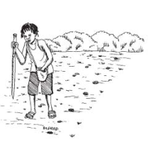
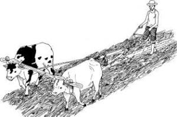

Reduced or Minimum Tillage Systems
This refers to those tillage practices where by minimum or no disturbance is effected on the soil for purposes of crop production. It involves the making of furrows or holes where seed is planted. The rest of the field remains undisturbed and crop residue is left on the surface. This practice reduces soil erosion; causes build up of organic matter in the soil, hence better chemical and physical soil fertility. Minimum tillage also implies reduced labour, energy, and reduced time demand in land preparation. Hence, cropping can be done in time at less cost. In most commercial farming, the weeding in minimum tillage systems would be done using
herbicides.
It differs from traditional tillage by having one or more of the following components:
- Less operations
- Less soil disturbance
- Requires less power
- Seedbed is prepared only where the seeds are planted
- Residues remain on topsoil (are not buried)
- Reduced use of several types of equipment
Only the necessary operations to optimise soil conditions for seed germination and crop establishment and growth are performed: minimise human and machine traffic and thus avoid soil compaction and destruction of soil structure; to avoid soil erosion; to conserve soil moisture; and to use less labour and mechanical energy.
Minimum tillage practices include:
1) Dibble stick planting
|  |
| Dibble stick planting |
| (c) ACT, Kenya |
Planting stick or machete can be used to create holes to plant the seed in an un-ploughed field with stubble/crop residue. The cut hardwood stick from the bush is sharpened at one end and used to make planting holes. The holes are made in lines at evenly spaced intervals that make it easier to weed and apply fertiliser or manure.
2) Disc-plant (stubble-harrowing)
This tool is used to loosen the soil, chop up crop residues and cut weeds. Afterwards planting is done without further soil disturbance and the crop residues are left on the surface
3) Strip and spot tillage
This involves scraping out shallow planting holes in un-ploughed soil, sowing the seed in the holes, then covering. This approach is common throughout the Sahel (Mali, Niger, Chad, and other countries). The only equipment needed is the hand hoe (Jjembe) and a planting stick. You can plant in the dry or just after the rains. The following are the steps involved:
- Dig small shallow holes at the correct distance from each other. Make the holes just deep enough to plant the seeds.
- Put the correct number of seeds in the hole, and cover them with soil.
- About 2 weeks after the crop emerges, use a stick to make a hole about 10 cm away from each plant. Put fertiliser into the hole.
Advantages
- Less labour requirement compared to conventional cultivation.
- More attractive to vulnerable households due to labour factor and not a huge chunk of land is required.
- Planting done on time
- Do not require expensive equipment - just a hoe and a stick.
Disadvantages
- Weed control may be difficult
- Do not break a hardpan caused by hoeing at the same depth year after year.
- Crop roots may not grow well as with planting basins, and less water will infiltrate into the soil.
4) Ripping
|  |
| Ripping |
| (c) ACT, Kenya |
A ripper is a chisel-shaped implement pulled by animals or a tractor. It breaks up surface crusts and opens a narrow slot or furrow in the soil, about 5 - 10 cm deep.
Many conservation tillage systems use a ripper with a single chisel fixed to a plough or ridger frame. In ripping, only shallow parallel furrows are cut using a ripper without disturbing the soil between the planting rows. The ripper should cut regular lines to facilitate subsequent weeding with ox-drawn weeders. Planting is usually done at the same time. The distance between the furrows depends on the recommended spacing for the crop. Ripping can reduce or eliminate the need for ploughing.
The ripper is faster than ploughing, as tillage is limited to only a thin opening for planting. Because of this narrow working width, pulling a ripper requires about half the draught force of that needed for pulling a
conventional single-furrow plough.
The ripper is smaller and lighter than a plough, and is easier to operate. The farmer can also use smaller animals, or animals that may be weaker at the end of the dry season. The ripper is also cheaper to buy and cheaper to maintain. As a result of these advantages, the farmer can work larger acreages each season, and achieve timeliness in operations, thus taking advantage of the early rains. This is important, especially in seasons of lower-than-normal rains or, generally, for marginal-rainfall zones. The weed problem can be serious in a rip tillage system. Therefore, action should be taken to lessen the
problem over the longer term. The ripper (e.g. the Magoye ripper) is a useful weeding tool.
Advantages
- Ripper attachments fit on a normal plough beam hence cheaper than complete implements.
- Can be used to make planting slots in dry soil allowing early planting.
- Disturbs the soil less than ploughing hence reduces soil erosion and encourages water infiltration into the soil.
Disadvantages
- Difficult if there is a lot of residue on the surface because the residue wraps around the ripper shaft.
- Disturbs up to 30% of the soil surface.
- Quite difficult to use on fields with tree stamps.
Case study 1: Study on effects of ripping in Wanging'ombe Village Southern Tanzania
Nineteen farmers of Wanging'ombe Village were introduced to ripping and improved soil cover with Mucuna in 2001. Five of these have doubled maize grain yield and increased sunflower production by 360% compared to
conventional mould board tillage (Table 5). However, there is confounding of the treatments, since the variable was not only tillage technique and cover crop, but also use of industrial fertilisers. The other 14 farmers could not attain similar yields because they could not afford to buy industrial fertilisers.
Farmers in Mayale Village reported that the performance of crops and crop yields were more stable since the adoption of Conservation Agriculture (CA) technologies. They were able to harvest a maize crop from ripped plots in 2001 when rainfall was merely 560 mm albeit a substantial (67.2%) labour saving (Table 7). Ripping enabled capture of rainwater along with in situ storage and cover crops (especially Mucuna) provided soil surface mulch for moisture retention, thus increasing crop stability against drought stress.
Table 1: Mean* maize and sunflower yields under CA (ripping and mucuna) practices in Wanging'ombe and Mshewe Wards
| Ward | Crop | Conventional cultivation** | CA practices*** | Increase (%) |
| Wanging'ombe | Maize yield (kg/ha) | 1125 | 2250 | 100 |
| Wanging'ombe | Sunflower yield (kg/ha) | 750 | 2700 | 360 |
| Mshewe | Maize yield (kg/ha) | 1500 | 2900 | 93 |
| Mshewe | Sunflower yield (kg/ha) | 625 | 1500 | 140 |
* Means of 5 CA FFS members in Wanging'ombe and 8 in Mshewe.
** Planting behind the plough at the start of the rains followed by two hand hoe weedings.
*** Opening of planting furrows with ox-drawn ripper on un-ploughed fields prior or at onset of rains, hand planting of seeds, two weedings with ox-cultivator.
Table 2: Maize grain yield on farmer trial plots at Mayale in 2001. Means of 7 farmers.
| No. | Treatment | Field Capacity (hahr-1)*1 | Labour input (Manday/ha-1) **2 | Maize grain yield (kgha-1) |
| 1 | Ox ripper | 0.0719 a | 31.6 b | 1344 a |
| 2 | Ox ripper planter | 0.0721 a | 29.6 b | 1059 b |
| 3 | Ox tied ridges | 0.0194 b | 102.6 a | 1021 b |
| 4 | Ox plough | 0.0211 b | 96.2 a | 1066 b |
| | Grand mean | 0.0461 | 65.0 | 1122 |
| | Coefficient of Variation (%) | 29% | 11% | 22% |
*1 Ability in terms of how many hectares can be worked in 1 hour by the ox-team (2 operators and a pair of oxen) using the respective implement.
**2 Labour input for the planting operation (i.e. opening of planting furrow, placement of seed, fertilizer and seed covering).
Source: Mkomwa et. al. 2002.
More labour saving benefits would be reaped if the full ripper and planter attachment were used, since it is possible for one person to open up the land and plant seeds. The ripper planter was not the choice of farmers, as it was more expensive than the ripper (Tsh 190,000 compared 120,000) and seed metering, using farmer (un-graded) seeds, was uneven.
Case study 2: Makundi's success story
Pastor Humphrey Makundi from northern Tanzania has one acre in his nearby farm. Normally he would harvest 6 bags of maize. He ripped with improved maize seeds intercropped with lablab. He also established contours that reduced runoff on his cattle pasture. He managed to harvest 10 bags that season [2004]. In the following season he rented 4 more acres and harvested 10 bags of maize from each acre, totalling 50 bags in one season.

{kind=link}
{kind=link}
{kind=link}
{kind=link}
{kind=link}
{kind=link}
{kind=link}
{kind=link}
{kind=link}
{kind=link}
{kind=link}